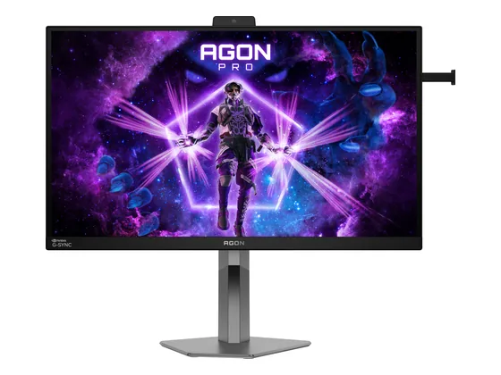
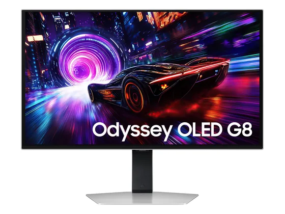

#1notre choixLe choix de la bande

27" QHD · QD-OLED · 280 Hz
L'OLED gaming devenu abordable : contraste infini, couleurs justes sans réglage, 280 Hz et un pied réglable, pour le prix d'un bon écran IPS.
8,0/104 notes presse · gamme
env. 360 €prix indicatif#2sur 10Le grand 4K OLED

32" 4K UHD · QD-OLED · 240 Hz
Le 32 pouces 4K OLED de référence : image exceptionnelle, 240 Hz, connectique complète avec USB-C 90 W. Cher et gourmand, mais la presse est unanime.
9,0/108 notes presse · gamme
env. 780 €prix indicatif#3sur 10La 4K OLED sur 27"

27" 4K UHD · QD-OLED · 240 Hz
La 4K à 240 Hz sur 27 pouces en QD-OLED : une image d'une finesse et d'un contraste remarquables, adorée par la presse, avec une garantie marquage de 3 ans.
8,6/1010 notes presse
env. 520 €prix indicatif#4sur 10L'OLED le plus abordable

27" QHD · QD-OLED · 240 Hz
Le QD-OLED d'Alienware à prix serré : 240 Hz, excellent contraste, traitement antireflet et micro intégré. La connectique reste minimale.
8,5/103 notes presse
env. 350 €prix indicatif#5sur 10Le 500 Hz

26,5" QHD · QD-OLED · 500 Hz
Un QD-OLED de dernière génération à 500 Hz : fluidité inégalée et très bonne luminosité plein écran. Un écran d'exception, au tarif qui va avec.
8,4/102 notes presse
2 tests notés seulementenv. 540 €prix indicatif#6sur 10Le 32" OLED malin

32" 4K UHD · QD-OLED · 240 Hz
Un 32 pouces 4K QD-OLED à 240 Hz, très bien noté, avec peu de scintillement VRR et une garantie marquage de 3 ans, souvent moins cher que ses rivaux.
8,4/105 notes presse · gamme
env. 620 €prix indicatif#7sur 10Le plus rapide

27" QHD · OLED · 480 Hz
Un OLED QHD à 480 Hz pensé pour l'e-sport : clarté de mouvement inouïe et latence très faible. Pour joueurs compétitifs exigeants, à un prix élevé.
8,3/106 notes presse
env. 830 €prix indicatif#8sur 10Le QD-OLED premium
Photo à venir
27" QHD · QD-OLED · 280 Hz
Un QD-OLED 280 Hz très bien fini, lumineux en HDR et très fluide, avec un pied solide : un excellent écran de jeu QHD.
8,0/103 notes presse
env. 380 €prix indicatif#9sur 10L'IPS e-sport

27" QHD · Fast IPS · 360 Hz · G-Sync Pulsar
Un IPS QHD à 360 Hz doté du G-Sync Pulsar : une netteté de mouvement de premier ordre pour les jeux de tir. L'image reste celle d'un IPS face aux OLED.
7,5/104 notes presse
env. 540 €prix indicatif#10sur 10La 4K OLED mate

27" 4K UHD · QD-OLED · 240 Hz
Un 27 pouces 4K QD-OLED à 240 Hz avec traitement mat anti-reflets : une image très fine et confortable en pièce éclairée, au prix d'un peu de punch.
Testé2 tests, sans note chiffrée
env. 600 €prix indicatif